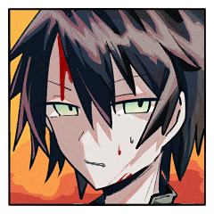
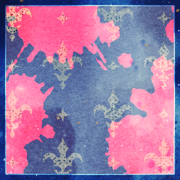

GM
果たしてこの世界の、どこに在るものでございましょうか。
GM
Dead or AliCe
「救世主の救世主」
◆プロローグ
GM
振り下ろしたバットを握った手に、確かで間違いのない、手応え。
GM
ここはある救世主の統治する街。
その中心に繰り広げられた裁判の最中。
GM
救世主と救世主が巡り会えば、必然に引き起こされる戦いの結末。

チバ
「死ねッ……死ね……死ね死ね……ッ……！！」
馴れない。本当に馴れない。一個良い事教えてやる。
死ねとか簡単に言うもんじゃない。死ねが安くなるから。
いや、早く死んで欲しい。死んだのか？
わからない。いや、答えは出てるだろ。見……見たくないな。
GM
この世界において、死の価値はこの上なく、安すぎるほどに安すぎる。
GM
あなたの願いは十全に果たされ、眼下に横たわる救世主の――
GM
指先一つ動かさなくなった。
肉塊と成り果てた、かつてはあなた達と同じ、言葉を発し動くものであった存在。
GM
潰された頭から、石畳に血がゆっくりと広がっていく。
GM
少し前までは生きていたはずの存在。
あなた達を策にかけ、命を奪わんとした救世主が。
チバ
息を吐いた。……ナメやがって。
手が白い。強く握り過ぎている。
金属バットで球打った時並みに指がしびれてる。
「多淵さん。クラレさん……」
「多分……終わりましたよ」
ラサ
拍手している。街路の建物の壁に半身を寄りかからせて。
ラサ
「素晴らしい！ この世界から破綻がまた1つ取り除かれたというわけだね！」
チバ
「多淵さん大袈裟っすね……」
「クラレさんは冷めてますね……」
クソ……ほどほどってやつが無いのかよ。
ラサ
声には消耗が滲んでいるが、いつものように泰然とした口調だ。
ラサ
「まあ、ボクらは大げさな肩書を持っているからね、そもそもが」
ラサ
「大げさなことを言うぐらいでちょうどいいんじゃないかな！」

クラレット
動かなくなった相手からコインを拾い上げる。
もうこれは相手のものではない。
GM
殺意の応酬には終幕が訪れ、主を失った街は静まり返っている。
GM
少し離れた場所からは、あなたたちの様子を恐る恐るに窺う末裔たちの姿が――
ラサ
「くっ！ 急に馬脚を表すじゃないか！ 世界め！」
GM
足元に転がる救世主の骸、血の匂いばかりはその濃さを残して。
クラレット
幻覚。それを操る新たな救世主の到来。
あるいは今倒した救世主が見せていた幻覚が解けたか。
ラサ
「あああああ！！やはりこの世界はメロン色の水槽に浮かぶ脳が見ている夢だったんだああああ！！！」
GM
悲しいことに、ラサが叫ぶような鮮やかな色彩とは裏腹の。
チバ
ビビっている。多淵さんよくこうなるんだよな。
GM
果てのない荒野が、救世主たちの視界に広がる。
ラサ
「大丈夫みんな？ 今認識のズレを修正する薬を投与するからね」
チバ
クソ、ちょっと可愛いから油断してしまう。
普段だったら絶対近寄らないタイプの女だぞ……。
クラレさんもツッコめよ……クソ……俺がおかしいのか？
クラレット
「薬は効いたみたい。清々しい表情になったわ」
単にメントールの味に影響されてのことだろう。
チバ
「わかりません。何も無い事だけは確かですけど」
ラサ
「ボクたちはどこにいるんだ？ それともどこかに飛ばされたと錯覚しているんだ？」
GM
乾いた風が吹いている。
あなたたちが訪れたはずの街は、もはや影も形もない。
クラレット
「街だと思っていたのはさっき死んだ救世主の見せていた幻だったか」
ラサ
「知らないのかい？ 埼玉は日々鳥取に乗っ取られているんだ」
ラサ
「しかし、今にして思えば、あれもこの堕落の国の陰謀が噛んでいたのかも知れない……」
チバ
「埼玉と鳥取めっちゃ距離ありませんか？」
どうやって繋がってるんだよ。クソ、気になっちゃうだろうが。
クラレット
彼らの話を聞くでもなく聞きながら辺りを見回している。
ラサ
「ここにラップトップがあれば、埼玉と鳥取が実質的に同一の県であることを証明できるんだけど……」
GM
埼玉を想うたところで、陰謀を問うたところで。
あなたたちが突然に荒野に投げ出されたことは紛れもない事実。
チバ
「とりあえず歩きましょう……じっとしてても仕方ない気がします」
ラサ
「そうだね。書き割りにぶつかるかも知れない」
GM
思えばあの街にいた末裔たちも、どこか空虚で覇気がなかったような。
なんてことを今更思い返しても、もはや仕様のない事。
GM
そもそも覇気ある末裔なんて存在が珍しい。
この世界の民は誰も彼もが疲弊している。
GM
訪れる先訪れる先で、あなたたちは救いを求められてきた。
ラサ
「君は忘れてしまったのか？ まさかそんな。“干渉”を受けでもしない限りは……」
GM
望むと望まざると、あなたたちの旅路は常にその延長線上にある。
チバ
「いや、そんなカンショウに浸るような思い出じゃないし……」
チバ
「ていうかクラレさんもうだいぶ進んでませんか」
追いかけて走った。砂が靴に入った。嫌だなあ。
ラサ
「待ちたまえ～。あまり離れないほうがいい。“奴ら”の思うツボだ……」のろのろと追いかける。
GM
思い出したくもない思い出ばかりが積み重なる。
GM
靴先に伝わる砂の感触のように、虚しさが常に付きまとう。
GM
熱を孕んだ風が吹き付け、乾いた砂が身体を叩く。
目に痛みが走り、舌にはざらついた感触が張りつく。
GM
厳しい裁判を潜り抜け、得られたのはいくばくかの６ペンスコイン。
救いはない。祝福もない。
徒労と疲労ばかりを背負いながら、歩みを進めるその先に。
GM
常にちらつく影がある。
出会うことになるものを知っている。
GM
白と黒の入り交じった影が、あなたたちの視界を横切った。
メル
けれど少しめずらしい、荒野にはとても似つかわしくない、
奇妙に整えられた衣装のさま。
メル
これもどこか珍しい、
媚びる色のないその眼差しが。
ラサ
「迷った救世主の前に出てくる小綺麗な白兎。さすがに都合が良すぎる」
クラレット
「とはいえ見逃すわけにもいかないでしょう」
チバ
そ、そうか？多淵さんいっつも陰謀の話するからな。
「うわっ喋った」
メル
「ちょっと、都合がよすぎるかも」
あなたたちの様子を見回して。
クラレット
「そうね。街が消えてしまって休むところもないし」
ラサ
「こうしている今も世界は陰謀によって脅かされ、堕落しつづけているのだから……」
チバ
「お、俺はそこまでじゃないですけど困ってます」
メル
ラサの言葉に首を傾げましたが、チバに言われて気を取り直します。
メル
「では――お導きしましょう」
胸に手を当て、どこか洒落込んだ様子に。
メル
「ぼくたちの願いを、ひとつばかり、聞き届けていただきたいのです」
チバ
「……ど、どうします？」
主体性の無さを発揮。
ラサ
「待て！ みすみす他人の用意した物語に乗るというのか？」
クラレット
「身なりからするに、他の救世主の庇護を受けているわ」
クラレット
「『次の責務』にも都合が良い。お互いね」
ラサ
「気は進まないが、他に代案を示せそうもないな」
荒野を見渡した。
チバ
どうしよう。え？クラレさんは行きたそうだ。マジで？
多淵さんは、どっちだ？
いや、これ多分なんだかんだ行くパターンじゃないか？
俺はどっちでもいいです、俺は合わせます。
いや、二人の意見が対立したら俺が決めるパターンじゃん。
それはちょっとな。ちょっとな。
よしまとまってる。よし。これではいって言うだけでいいぞ。
よし。
「俺は……二人に合わせますよ」
メル
チバの言葉を受けて、ラサとクラレットを見ます。
ラサ
チバくんは自分の意見というものを持ったほうがよいなと思うな
ラサ
「ここで三人バラバラになることがもっとも危険だ。三人で“おもてなし”とやらを受けることにしよう」
メル
「ありがとうございます。
……それでは、こちらに」
メル
やがて、荒野にありふれた瓦礫の山へと辿り着く。
ラサ
怪しい布団や怪しい壺や怪しい石など買わされないように気をつけるのだよ。そのために僕が紹介したいのはこの指輪だ。この指輪は身につけているだけで人からの悪意やサイキック・アタックを防いでくれるんだ。
クラレット
それを買ったら怪しい壺や石を買わされるのと同じことにならないかしら？
メル
救世主さまはすばらしいものをお持ちなのですね。
チバ
「まさか、実は違うんですか？」
指輪良いな。いや、こんなの付けてたら生活指導に呼ばれるだろ。
メル
「そうですね」
答えて相槌、
それから六ペンスコインを一枚取り出す。
ラサ
一見して瓦礫の山のようだが、もちろん、本当に瓦礫の山である可能性もあるし、実は瓦礫の山ではない可能性がある──ボクが言いたいのは、つまりそういうことさ。
メル
一目でわかる、救世主から与えられた貨幣。
それを使って、瓦礫へと何かを刻み込むように描くと。
GM
少しばかり栄えた村が、蜃気楼のように現れる。
ラサ
「フ、やはりね」さも全てを悟っていたかのような口ぶり。
チバ
「す、すごい……」え？もしかして知ってたんですか？の顔
GM
末裔たちは、一見して数十人。
家があり、畑があり、営みがある。
幻のように現れた生活のさま。
クラレット
この世界じゃ、目に見えることのどれだけが信じられるかわかったものではない、といつも思う。
メル
その多くのものが、この白兎と同じようにきれいな身なりをしていて。
エール
その中にひとりだけ、ひどく汚れたものがいる。
エール
座り込んだその膝元には、兎たちが気持ちよさそうに眠っている。
その頭を撫でてやりながら。
メル
「はい。戻りました。
……この方々は」
あなたたちを振り返る。
クラレット
彼、か、彼女か分からぬ者をじっと見る。
獣の耳、尻尾、翼、甲羅、蹄。
そのどれかがないかと。
エール
そういった特徴は見当たらない。
ただひどく見窄らしいその姿の一方。
チバ
もてなされに来ています。
見る限りでは一番偉そうなのにな。この人。
エール
人の命を奪ってきたものとしての、業がそこにある。
エール
立ち上がる。
膝の兎を一匹抱き上げてやりながら。
エール
一匹は起こしてやり、頭を撫でて、好きにゆかせる。
ラサ
この場所を用意したのはおそらく救世主の力によるものだろう。ではなぜ一番みすぼらしいのか。いくつか理由が浮かぶ。
エール
「いらっしゃいませ、救世主さまがた。
……ご案内するよ」
エール
「この村には……名前だとかは、べつにないけれど」
エール
「わたしはエール。このような形ですが、救世主だ」
チバ
「……チバです。よろしくエールさん」
反射的に名乗った。ならエール村なのかな。
絶対攻撃されると思ったのに、何だ？この人。
クラレット
「……クラレット。救世主さまなどと、敬称は要らない。私たちは対等な立場のはず」
エール
ラサが名乗らないのはあまり気にせず、クラレットに緩慢な相槌を打ちながら。
エール
「こんなふうに暮らしていると、なんだか、うつってしまって……」
ゆったりとした足取りであなたたちを導く。
周囲の兎たちがそれに追従し、あるいは先行し、準備を始めたがる気配がある。
それらを全て好きにさせている。
エール
「なにがしかは起こり、だれがしかの糧となるだろう」
GM
ありがとうございました。
導入シーンは以上です。